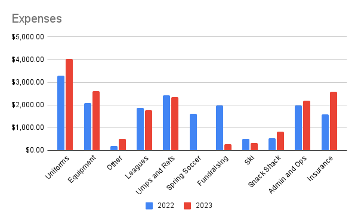
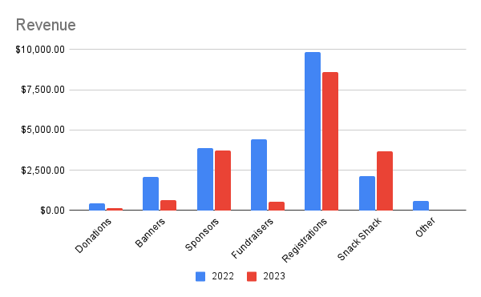

Fundraising
WYSA is a 501(c)3 non-profit. We receive NO funding from the Town of Warner, State of New Hampshire, or other government. All of our revenue comes from donations by individuals, local business sponsorships, our own fundraisers, and registration fees of participants. Our board, sports directors, and coaches are all unpaid volunteers. Referees and umpires receive a small stipend. The Town of Warner Parks and Recreation Department provides field maintenance and a few items of field equipment: line painting carts and ball throwers.
Registration fees cover about 76% of each sport's direct costs, with another 35% covered by sponsors. The extra 11%, plus fundraisers and advertising banners, cover our overhead: insurance, payment processing, background checks, subscriptions to TeamSnap and QuickBooks, and minor administrative costs. We also provide scholarships to some of our participants who cannot afford the full registration fee.


Fundraisers
We hold or have held the following fundraisers:
- Warner Fall Foliage Festival Lemonade Stand
- Hero Hustle 5K at Spring into Warner
- Snack Shack at home games
- Promotional sales with local businesses
- Fall soccer tournament
We are always seeking volunteers and additional ideas for fundraisers.
If you would like to host a fundraiser or sponsor a team, please contact our Fundraising Coordinator.
Donations
If you would like to donate to WYSA, please contact our Treasurer, or send a check to:
WYSA, P.O. Box 20, Warner, NH 03278